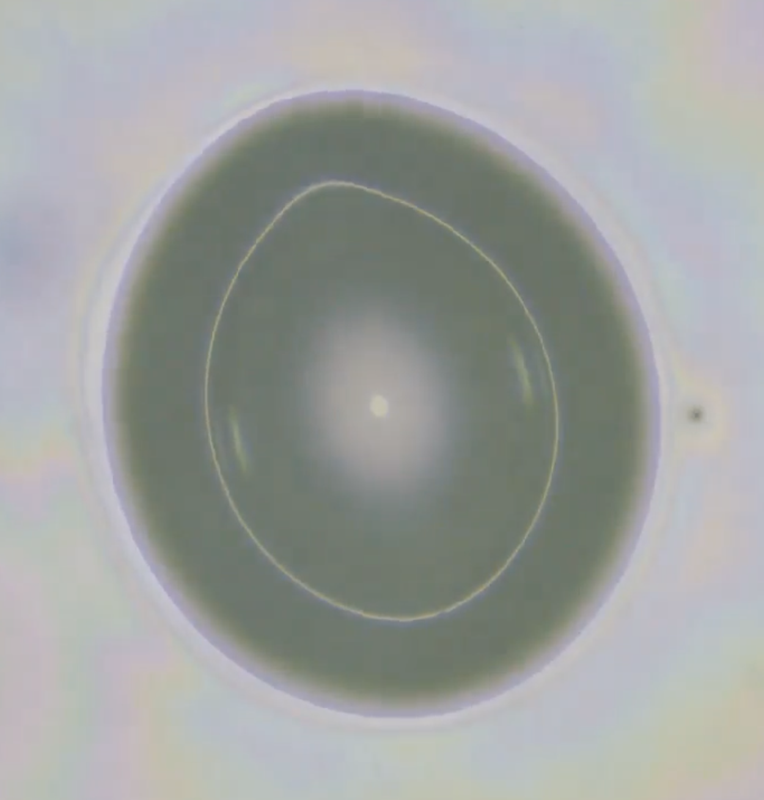

Ongoing Project
Exploding Drops
Evaporating droplet's explosive finale
When a drop evaporates, it is easy to think of it as a purely thermal and mass-transfer process. In reality, subtle electrohydrodynamic phenomena can transform its quiet demise into a highly charged and sometimes violent event. Under certain conditions, such as when contact-line pinning is eliminated, the shrinking drop can accumulate enough charge to approach its electrostatic stability limit. At this point, electrostatic repulsion overwhelms surface tension, triggering Coulombic explosions and fine spray ejection. These findings reveal evaporation as a rich playground for soft matter physics, where thermal, hydrodynamic, and electrostatic forces converge to produce surprising dynamics.
Reference

Spontaneous Coulomb fissions of drops on lubricated surfaces
Proceedings of the National Academy of Sciences (PNAS), 123(18), e2538161123, 2026